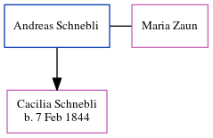

Andreas Schnebli
| [ Calendar ] | [ Surnames Index ] | [ Census Index ] | [ Family History ]Andreas Schnebli and had 1 child with Maria Zaun: Cacilia.
Children
- Cacilia was born on Feb 7, 1844
Family Tree
Generated by ged2site. Last updated on Jun 12, 2024